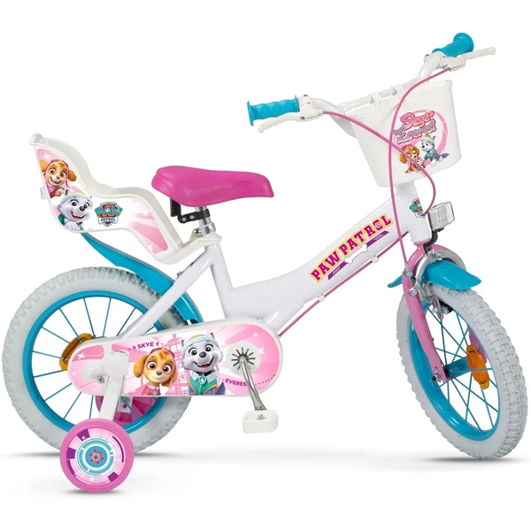
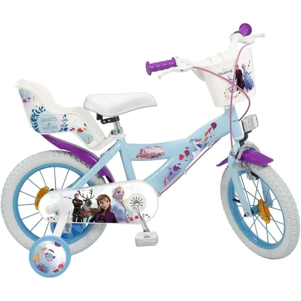
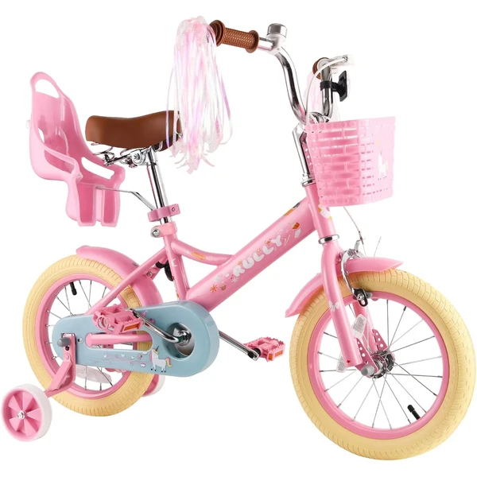
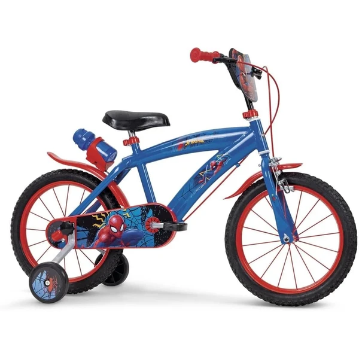

TOIMSA Bicicleta Paw Patrol
Una bicicleta de 14 pulgadas con licencia oficial Paw Patrol, con ruedines incluidos para dar estabilidad durante el aprendizaje del pedaleo.
⭐ ¿Por qué nos gusta?
- ✔ Licencia oficial Paw Patrol.
- ✔ Ruedines incluidos para mayor estabilidad.
- ✔ Tamaño 14 pulgadas, pensado para esta edad.
💬 Lo que más destacan las familias
Lo que más suele gustar es lo motivados que se ponen los peques al ver a Skye y Everest en su propia bici, lo que ayuda bastante a que quieran salir a practicar. Los ruedines también dan tranquilidad a los padres durante las primeras salidas.
Ver en Amazon

TOIMSA Bicicleta Frozen 16 Pulgadas
Una bicicleta de 16 pulgadas con licencia oficial Frozen, con ruedines, cesta delantera y portamuñecas trasero, pensada para niñas de 5 a 8 años.
⭐ ¿Por qué nos gusta?
- ✔ Licencia oficial Disney Frozen.
- ✔ Cesta delantera y portamuñecas trasero incluidos.
- ✔ Freno delantero Caliper y trasero de tambor.
💬 Lo que más destacan las familias
Una de las cosas más comentadas es que la cesta y el portamuñecas convierten cada paseo en un pequeño juego, porque las niñas llevan a su muñeca favorita de acompañante. La temática Frozen también suele ser un acierto seguro para esta edad.
Ver en Amazon

RULLY Bicicleta Infantil con Cesta
Una bicicleta disponible en 3 tamaños con cesta, asiento para muñeca y serpentinas decorativas, con doble freno y ruedas de apoyo desmontables.
⭐ ¿Por qué nos gusta?
- ✔ Cesta, asiento de muñeca y serpentinas incluidos.
- ✔ Doble freno: de mano y contrapedal.
- ✔ 3 tamaños disponibles según la edad.
💬 Lo que más destacan las familias
Entre los comentarios más habituales aparece lo mucho que gustan las serpentinas y el asiento para muñeca, detalles que la hacen sentir más personal que una bici cualquiera. Que venga en varios tamaños también facilita acertar con la talla adecuada.
Ver en Amazon

TOIMSA Bicicleta Spiderman 16 Pulgadas
Una bicicleta de 16 pulgadas con licencia oficial Spiderman, con ruedines, bidón y portabidón incluidos, pensada para niños de 5 a 8 años.
⭐ ¿Por qué nos gusta?
- ✔ Licencia oficial Marvel Spiderman.
- ✔ Bidón y portabidón incluidos.
- ✔ Freno delantero Caliper y trasero de tambor.
💬 Lo que más destacan las familias
Quienes lo han probado destacan que el diseño de Spiderman anima mucho a los niños a querer salir a montar, y que el bidón incluido es un detalle práctico para los paseos más largos. Los frenos también dan confianza a los padres cuando el niño empieza a coger velocidad.
Ver en Amazon